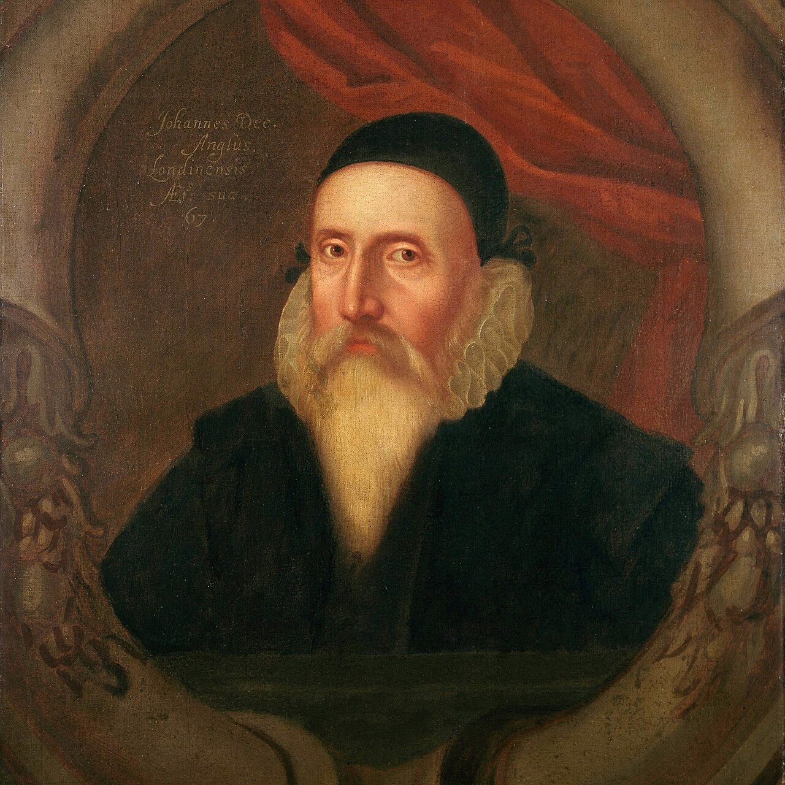

Angelic Correspondence
He asked the angels questions for thirty years — and never once asked what they were.

Angelic Correspondence
He asked the angels questions for thirty years — and never once asked what they were.
Feature map
Level-by-level features, as the figure refined them.
Operator & Skryer / Consult the Shew-Stone / Correspondence
Action · 1 CE.
Your CE ability for this technique is Intelligence. During a rest, designate one willing creature as your Skryer and prepare a reflective focus. Consult the Shew-Stone: ask one objective yes/no question about the present state of something perceived by you or the Skryer. The GM answers Yes, No, or Obscured — truthfully, and to the Skryer, never to you (the witness law). Until the end of your next turn, the first d20 roll by you or the Skryer that directly and plausibly exploits a clear answer gains +PB (GM-gated: the table must explain the connection). Questions about futures, secret intentions, morality, or unknowable metaphysics return Obscured. If no willing second creature is available, you may serve as your own emergency Skryer for +1 CE.
Cross-Examination
Bonus action · 2 CE.
Ask a follow-up question narrowing the same subject. If both answers are clear and are genuinely used together, the Correspondence roll also ignores one source of disadvantage.
Distant Conference
Passive (requires matched mirrors).
With matched mirrors, you and your Skryer may operate up to 1 mile apart. Only the Q&A channel crosses the distance — no remote attacks, no sight-sharing.
Four Castles
Action · 4 CE · Focus, 1 minute.
Set four Seal points forming a ritual area. After a clear Query about a subject inside the area, you and your Skryer treat that subject as perceptible for further Queries — even through smoke, invisibility, or mundane walls. Total cover still blocks attacks.
Angelic Grammar
Passive.
Consult the Shew-Stone becomes a bonus action. You may maintain two Skryers. Once per round, an Obscured answer must instead provide one truthful symbolic clue — short, non-numeric, never a disguised future prediction — delivered to a Skryer, preserving the witness law.
Maximum, Domain, or equivalent.
Capstone material.
Monas Hieroglyphica
Requires four clear Query answers about the same target in the current encounter. Write one Axiom drawn from established facts only. For 1 minute, once per round a willing creature directly testing the Axiom may reroll one failed d20. If a premise is definitively disproven, the Maximum ends and you take 4 × PB psychic damage.
What He Never Asked
Ask one objective yes/no question about the present state of something neither you nor your Skryer perceives — anything the campaign has established. The witness law holds: the answer is given truthfully (Yes or No, never Obscured) to the Skryer. Thirty years of questions, and the angels were listening all along.
Build-defining options.
This technique grants Innate Technique Feats — hand-authored applications of the figure's art, available in the builder's feat picker when you select this technique.